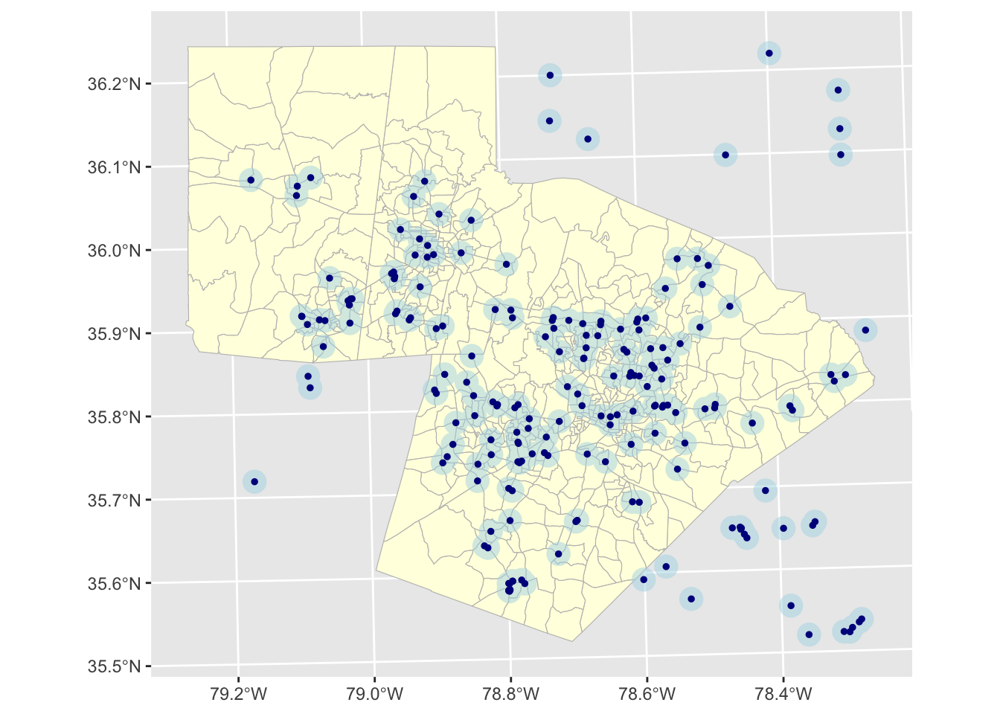
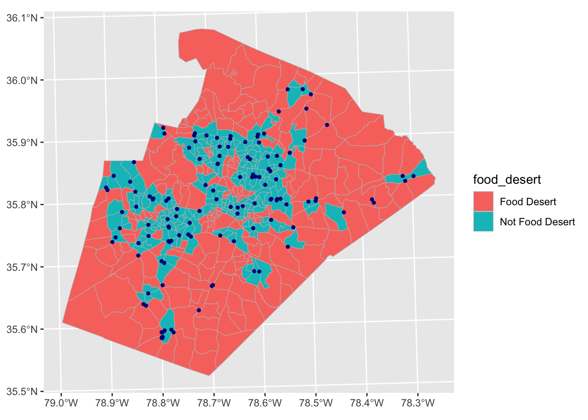
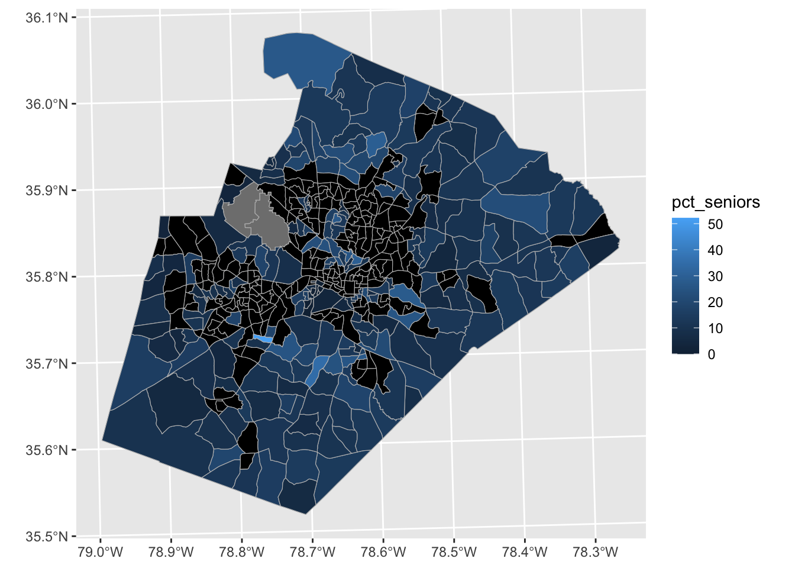

We define food deserts as areas more than 1 mile away from a supermarket. Below, I will show the code and resulting map used to identify such areas in the Triangle Region. The map is shown in Figure 1
library(tidyverse)
── Attaching core tidyverse packages ──────────────────────── tidyverse 2.0.0 ──
✔ dplyr 1.1.4 ✔ readr 2.1.6
✔ forcats 1.0.1 ✔ stringr 1.6.0
✔ ggplot2 4.0.1 ✔ tibble 3.3.1
✔ lubridate 1.9.4 ✔ tidyr 1.3.2
✔ purrr 1.2.1
── Conflicts ────────────────────────────────────────── tidyverse_conflicts() ──
✖ dplyr::filter() masks stats::filter()
✖ dplyr::lag() masks stats::lag()
ℹ Use the conflicted package (<http://conflicted.r-lib.org/>) to force all conflicts to become errors
library(sf)
Linking to GEOS 3.13.0, GDAL 3.8.5, PROJ 9.5.1; sf_use_s2() is TRUE
#read in datasupermarkets <-st_read("hw3-data/triangle_supermarkets_osm.shp")
Reading layer `triangle_supermarkets_osm' from data source
`/Users/liam/Documents/plan372/plan372_hmks/hw3/hw3-data/triangle_supermarkets_osm.shp'
using driver `ESRI Shapefile'
Simple feature collection with 208 features and 2 fields
Geometry type: POINT
Dimension: XY
Bounding box: xmin: -79.17115 ymin: 35.52063 xmax: -78.26545 ymax: 36.22003
Geodetic CRS: WGS 84
Reading layer `orange_durham_wake_block_groups' from data source
`/Users/liam/Documents/plan372/plan372_hmks/hw3/hw3-data/orange_durham_wake_block_groups.shp'
using driver `ESRI Shapefile'
Simple feature collection with 683 features and 12 fields
Geometry type: POLYGON
Dimension: XY
Bounding box: xmin: -79.26843 ymin: 35.51946 xmax: -78.25371 ymax: 36.24344
Geodetic CRS: NAD83
#transform spatial data to the same type & create 1 mile buffer around supermarketssupermarkets <-st_transform(supermarkets, 32617)block_groups <-st_transform(block_groups, 32617)supermarket_buffer <-st_union(st_buffer(supermarkets, dist =1609))#filter data to only consider Wake County. this map will include points in other counties, but later maps will exclude themwake_block_groups <-filter(block_groups, COUNTYFP ==183)wake_boundary <-st_union(wake_block_groups)wake_supermarkets <-filter(supermarkets, st_intersects(supermarkets, wake_boundary, sparse =FALSE))
Warning: Using one column matrices in `filter()` was deprecated in dplyr 1.1.0.
ℹ Please use one dimensional logical vectors instead.
#create map with selected parametersggplot() +geom_sf(data = block_groups, fill ="lightyellow", color ="gray") +geom_sf(data = supermarket_buffer, fill ="lightblue", alpha =0.5, color =NA) +geom_sf(data = supermarkets, color ="darkblue", size =1)

Figure 1: Food deserts and supermarket locations in the Triangle Region
Now, we must classify block groups as inside or outside the buffers to label them as included or not included in the food deserts. As for the block groups that overlap only partially with the buffers, I will consider the block group as inside the buffer if its geographic center lies within the buffer. This method is sensible because the center is the shortest distance to each residence in the block and it avoids excluding block groups with only minimal buffer overlap from desert consideration. Ideally, a modified center could be identified for each block group based on the geographical distribution of population, but this would be very complicated and the geographical center should be a solid representative point of each block.
#filter block groups to get only Wake Countywake_block_groups <-filter(block_groups, COUNTYFP ==183)#get the center, or centroid, of each block groupwake_centroids <-st_centroid(wake_block_groups)
Warning: st_centroid assumes attributes are constant over geometries
#add a column to the block groups data classifying centroids as food deserts or notwake_block_groups <-mutate(wake_block_groups,food_desert =ifelse(st_within(wake_centroids, supermarket_buffer, sparse =FALSE),"Not Food Desert", "Food Desert" ) )#ggplot() +geom_sf(data = wake_block_groups, aes(fill = food_desert), color ="gray") +geom_sf(data = wake_supermarkets, color ="darkblue", size =1)

Figure 2: Classifying block groups as food deserts in Wake County
Figure 2 displays food deserts in red, and non-food deserts in blue. In this map, all data outside of Wake County have been filtered out. In order to determine the percentage of the Wake County population that resides in food deserts, we must consult the census data.
#|fig-cap: Wake County population statistics in food deserts vs. non-food deserts#|label: fig-wake_des_tablecensus <-read_csv("hw3-data/triangle_census.csv")
Rows: 683 Columns: 11
── Column specification ────────────────────────────────────────────────────────
Delimiter: ","
dbl (11): GEOID, total_population, total_households, seniors_65plus, race_wh...
ℹ Use `spec()` to retrieve the full column specification for this data.
ℹ Specify the column types or set `show_col_types = FALSE` to quiet this message.
#convert census GEOID to character to match block groups GEOIDcensus <-mutate(census, GEOID =as.character(GEOID))#join the census data to the wake block groups by the GEOID columnwake_census <-left_join(wake_block_groups, census, by =c("GEOID"="GEOID"))#filter to only Wake Countywake_census <-filter(wake_census, COUNTYFP =="183")#calculate total population inside and outside food desertsfood_desert_pop <- wake_census %>%group_by(food_desert) %>%summarize(total_pop =sum(total_population, na.rm =TRUE)) %>%ungroup()food_desert_pop
?@fig-wake_des_tbl reveals that 539,743 out of the 1,069,079 residents of Wake county (50.5%) reside in food deserts. Note that the exact number depends on the accuracy of our food desert classification method (centroids). More code is needed to analyze the demographics of the people living in food deserts.
#|fig-cap: Low-Income & Zero-Vehicle statistics for Wake County residents in vs. not in food deserts#|label: fig-zv_li_table#calculate vehicle and income statisticsfood_desert_demo <- wake_census %>%group_by(food_desert) %>%summarize(total_hh =sum(total_households, na.rm =TRUE),zero_veh =sum(zero_vehicle_households, na.rm =TRUE),low_income =sum(households_income_less_than_35k, na.rm =TRUE) ) %>%ungroup() %>%mutate(pct_zero_veh = zero_veh / total_hh *100,pct_low_income = low_income /total_hh *100 )food_desert_demo
?@fig-zv_li_table displays the amounts and percentages of people living in low-income and zero-vehicle households, compared by food desert status. We find that the both of these rates are lower for people living in food deserts. This makes sense, as people who may not be able to afford a vehicle would more likely be forced to reside close to a supermarket. People with more income would more likely have a vehicle and have more freedom to comfortably live farther away from a supermarket.
In deciding where to place a new supermarket, I’ve elected to consider the distribution of seniors as the variable of interest. Seniors tend to have trouble moving around and progressively become worse drivers as they age. Thus, it follows to try to minimize the distance that seniors must drive to reach a supermarket. This is especially important during times of inclement weather, like the lengthy duration of icy and snowy roads in North Carolina this past winter. However, it would be most helpful to consider seniors currently living in food deserts. Mapping the geographical distribution of seniors would ignore the existing supermarkets that those seniors already have access to. In order to determine the ideal location for a new supermarket, we will filter the census data to map the block groups with a continuous variable of percentage of seniors. Block groups not in food deserts will be excluded from this variable.
#|fig-cap: Percentage of seniors (65+) in food desert block groups, Wake County#|label: fig-seniors_map#filter census to only include food desert block groupswake_food_desert <-filter(wake_census, food_desert =="Food Desert")#calculate pct of seniors in each block groupwake_food_desert <-mutate(wake_food_desert,pct_seniors = seniors_65plus / total_population *100 )ggplot() +geom_sf(data = wake_block_groups, fill ="black", color ="gray") +geom_sf(data = wake_food_desert, aes(fill = pct_seniors), color ="gray")

?@fig-seniors_map blacks out all block groups not in food deserts to ensure that we do not place a new supermarket in a place where it is not needed. The gray block groups represent block groups where the total population is 0 or N/A. The blue block groups represent food deserts, and the gradient key indicates that the lighter shades of blue represent block groups with higher percentages of seniors in the population. Evidently, there is one block group significantly lighter than the rest. However, this block group is surrounded by block groups not considered to be food deserts, implying that there are likely supermarkets shortly outside the 1 mile range criteria. It would be far more beneficial to place a new supermarket in the center of a large blue area to benefit more people. It is important to note that within any large blue area, we should shift the placement the supermarket slightly to cater to lighter blue block groups in order to cater to areas with more seniors. My recommendation for placement with regards to these factors would be near 35.7°N, 78.7°W.
While I decided to rationalize my placement based on the distribution of seniors in Wake County and the presence/absence of more food desert areas adjacent to each block group, there are more factors to be considered if this exercise had real implications. The census data includes statistics about ethnicity, income, and transportation availability, all of which should be included in real-life considerations. Considering any of these factors alone is far less meaningful than evaluating them all together. It would be useful to create heat maps of low-income households and zero-vehicle households, and overlay them with ?@fig-seniors_map to find zones in need of a supermarket for income, transportation, and age-related reasons. Considering seniority and adjacent block groups alone makes 35.7°N, 78.7°W a very sensible choice.